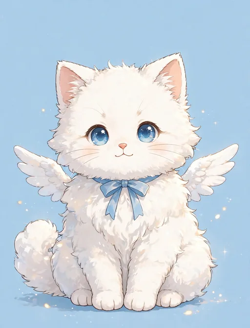

セラフィナ モコ｜モコ（翼のある白い子猫）

プロフィール
| 名前 | モコ |
|---|---|
| 立場 | セラフィナの相棒（翼のある白い子猫） |
| 見た目 | 雲みたいに白くふわふわの子猫。小さな翼が生えていて、首には水色のリボン。瞳は空色 |
| 性格 | 甘えん坊で人懐っこい。「にゃあ」と甘える声が特徴 |
| 誕生日 | 2月22日（猫の日。セラフィナと同日で、ダブル生誕祭を行います） |
モコについて
セラフィナと一緒に地上へ降りてきた、翼のある白い子猫です。空色の瞳と水色のリボンはセラフィナとお揃いの印。降臨直後のカルチャーショックの場面でも、推し活や旅の場面でも、いつもセラフィナのそばにいます。
グッズ展開ではセラフィナと並ぶ主役候補で、SUZURI「222キャラ工房」のグッズにも登場しています。2月22日は猫の日であり、セラフィナとモコのダブル生誕祭の日です。
第9弾の関西の旅では一緒に紅葉をめぐり、第10弾のクリスマスではサンタ帽姿も見せました。どの物語でも、セラフィナの隣で小さく寄り添う存在として描かれています。
登場するイラストパック
モコが初登場する第1弾『降臨 〜日本橋に染まるまで』はこちら。